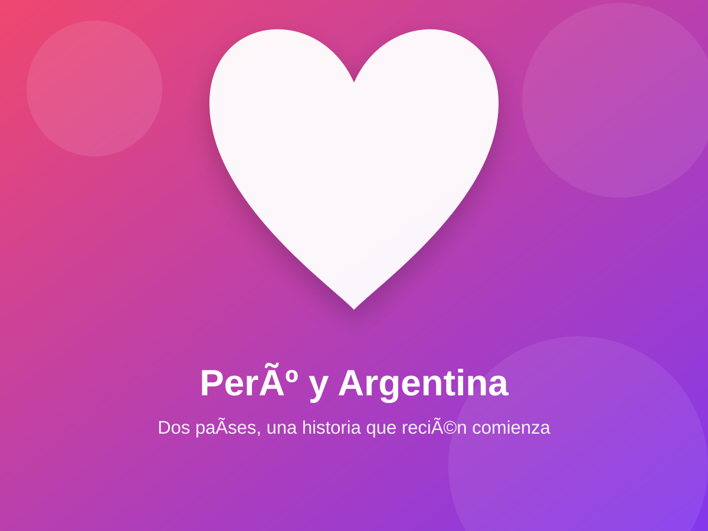
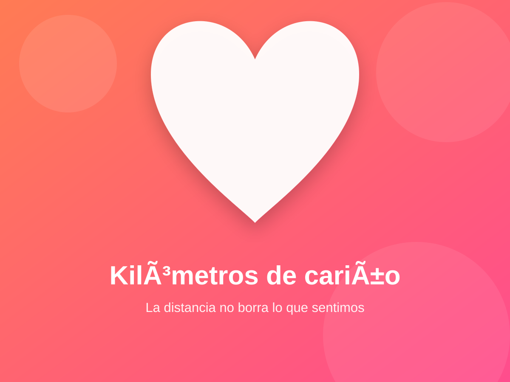
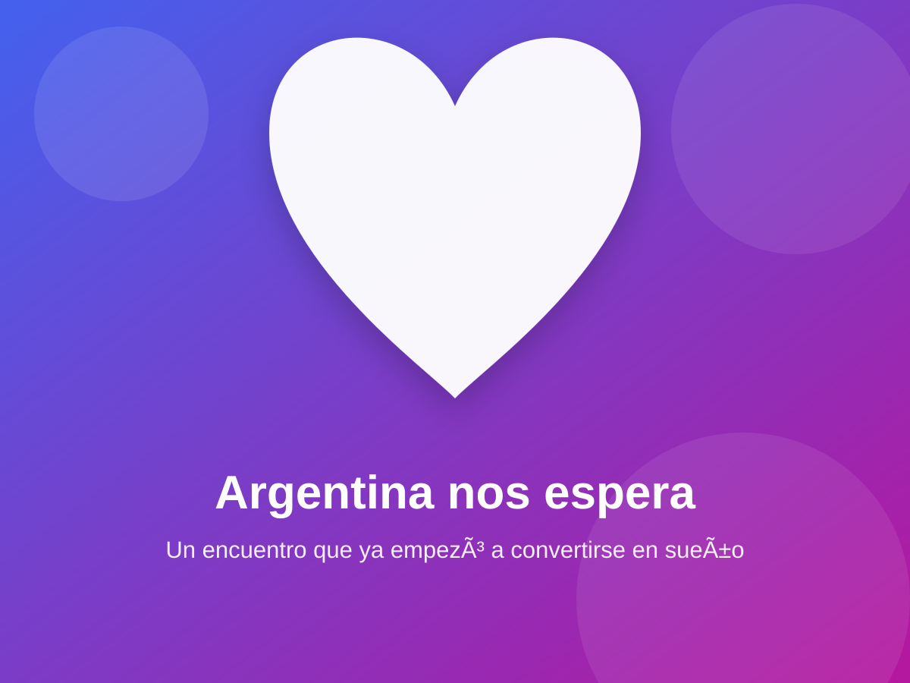

Nos encontramos
Entre tantos lugares y tantas personas, coincidimos nosotros. Y esa coincidencia empezó a sentirse especial.
UN REGALO QUE VIAJÓ MUCHOS KILÓMETROS
No pude envolver todo lo que siento, así que lo convertí en una pequeña página para ti.
La música comenzará cuando presiones el botón.DOS PAÍSES · UNA HISTORIA
Kiara, quizá hoy estemos en países diferentes, pero cada conversación, cada risa y cada pequeño detalle hace que Argentina se sienta un poco más cerca de Perú.
Seguir leyendo ↓Algún día este camino dejará de ser una línea en una pantalla.
LO QUE ESTAMOS CONSTRUYENDO
Entre tantos lugares y tantas personas, coincidimos nosotros. Y esa coincidencia empezó a sentirse especial.
A pesar de la distancia, seguimos hablando, conociéndonos y cuidando esta historia de una forma sincera.
Algún día Argentina dejará de ser solo un lugar en el mapa: será el lugar donde por fin podamos encontrarnos y darnos ese abrazo pendiente.
RECUERDOS Y SUEÑOS



UN REGALO ESPECIAL
No necesito saber la fecha exacta para saber que quiero vivir ese momento contigo.
Hoy nos separan kilómetros, pero también nos unen conversaciones, cariño, paciencia y las ganas de conocernos de verdad.
MI PEQUEÑA PROMESA
01Seguir conociéndote de verdad, sin fingir y sin apresurarnos.
02Cuidar esta conexión incluso cuando los días sean complicados.
03Hacer todo lo posible para que nuestro encuentro en Argentina se convierta en realidad.
UNA CARTA PARA TI
No sé exactamente en qué momento nuestras conversaciones comenzaron a importarme tanto, pero me alegra que haya ocurrido.
Me gusta la relación bonita que estamos formando. Me gusta saber que, aunque tú estés en Argentina y yo en Perú, logramos encontrar maneras de acompañarnos.
No quiero prometerte una historia perfecta. Quiero prometerte algo más real: sinceridad, paciencia, cariño y las ganas de hacer que nuestro encuentro no se quede solo como un sueño.
Imagino el momento de verte por primera vez, reconocer tu voz sin una pantalla de por medio y finalmente darte ese abrazo que hoy tiene miles de kilómetros de distancia.
Gracias por llegar a mi vida, Kiara. Esta página es pequeña comparada con todo lo que quisiera decirte, pero está hecha de corazón.
Con mucho cariño,
DANIEL 🇵🇪
NUESTRA CANCIÓN
Camilo y Evaluna